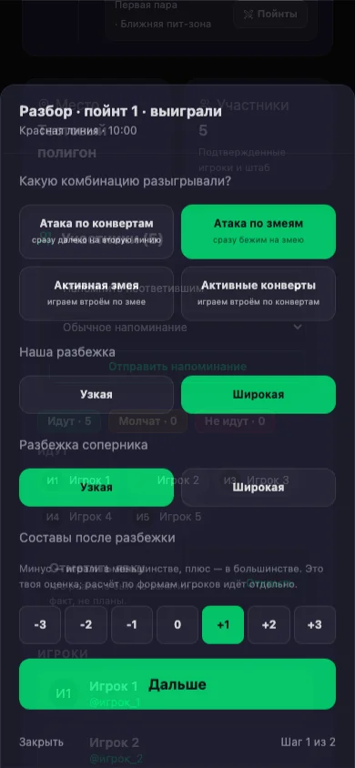

Создать событие
Что сделать
- Нажмите кнопку создания события.
- Выберите его вид: тренировка, сбор, турнир или чемпионат.
- Укажите дату, время и место.
- Если событие повторяется, создайте сразу несколько событий.
- Сохраните событие.

Что получится
Событие появится у участников команды. Они увидят место и время и смогут сообщить, придут они или нет.
Проверить, кто придёт
Что сделать
- Откройте событие.
- Посмотрите ответы участников.
- Если изменились время или место, отредактируйте событие.

Что получится
У вас будет актуальный список участников, а команда увидит последние изменения.
Добавить игры и записать счёт
Что сделать
- Откройте событие.
- Найдите раздел «Расписание игр».
- Нажмите «Добавить».
- Укажите соперника и время игры.
- После игры запишите счёт. Результат нашей команды всегда указывается слева. Например,
4:3означает, что наша команда выиграла четыре игровых отрезка, а соперник — три.

Что получится
Результат игры сохранится в событии. На его основе приложение создаст список игровых отрезков для дальнейшего разбора.
Указать порядок выигранных и проигранных отрезков
В приложении отдельный отрезок игры называется пойнтом. Например, игра со счётом 4:3 состоит из семи пойнтов.
Что сделать
- Откройте «Пойнты».
- Для каждого пойнта укажите: «Выиграли» или «Проиграли».
- Проверьте, что число побед и поражений совпадает со счётом игры.

Что получится
Будет виден реальный ход игры: в каком порядке команда выигрывала и проигрывала.
Добавить заметки капитана
Что сделать
- Откройте нужный пойнт.
- Укажите, какую тактику использовала команда.
- Отметьте, как начинали мы и соперник.
- Добавьте короткую заметку.

Что получится
Наблюдения капитана попадут в общий разбор события и помогут подготовить следующую тренировку.
Посмотреть итоговый разбор события
Что сделать
- Откройте событие.
- В разделе «Расписание игр» нажмите «Разбор».
- Откройте вкладку «Итоги».
- Посмотрите общий результат, ход пойнтов, где и когда игроки выходили из игры, какие начала и тактики были лучше, а также полноту данных.

Что получится
Вы увидите сильные и слабые места команды и сможете выбрать конкретные задачи для следующей тренировки.
Вести деньги команды
Что сделать
- Откройте «Казну».
- После события добавьте расходы команды.
- Проверьте рассчитанный сбор.
- Отметьте полученные оплаты.
- Посмотрите долги и историю операций.

Что получится
Будут видны суммы, которые уже получены, и участники, которые ещё не заплатили.
Вести состав команды
Что сделать
- Создайте приглашение для нового участника.
- Отправьте его в Telegram.
- Назначьте роль участнику.
- Проверьте его статус.

Что получится
В приложении будет актуальный состав команды с правильными ролями и доступами.
Короткая памятка капитана
- Перед событием: создать событие и проверить ответы команды.
- Перед играми: добавить расписание и соперников.
- После каждой игры: внести счёт и указать порядок побед и поражений.
- После события: добавить заметки и посмотреть итоговый разбор.
- По деньгам: внести расходы, проверить сборы и долги.
- По составу: пригласить участников и проверить их роли.